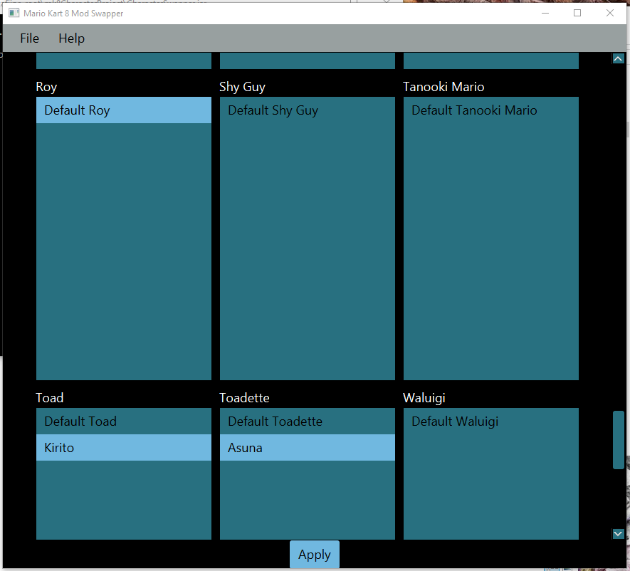

GEORGE
TIERSMA

Software Developer - Digital Artist
ABOUT ME
blah blah blah blah blah blah blah blah blah blah blah blah
PROJECTS
-
+
Computer Programming
Project Scaper (Title Pending)
Project Scaper allows graphic designers that have no 3D modeling experience to create 3D environments. It imports images designed by the user and uses the images as maps to generate the 3D shape.
It is programmed in Java with the help of the JavaFX platform.
-
+
Graphic Design
History's Role for the Future

These compositions were created to contrast the effects that knowledge has on society through time. The top image shows history being studied and a good future on the wall. The bottom image displays history being ignored and a threatening future on the wall.
They take place during the early Renaissance, while the pictures on the wall portray the what will come of future in perspective of the Renaissance, specifically the late 1800s and early 1900s.
The compositions were created in Photoshop. They are composed of dozens of separate layers. The photos in the background were provided by the Library of Congress. The subject's face was created in Daz 3D, while her hair was painted directly in Photoshop and the armor was created from manipulated photos of a metal pen. All other elements were created from photos I shot.
TECHNICAL SKILLS
-
+
Graphic Design
Very familiar with Adobe Photoshop and Gimp
Practices non-destructive design in image editors whenever possible
Skilled with typography and logo design
Skilled with user interface creation
-
+
Computer Programming
-
+
Web Development
-
+
Computer Hardware
-
+
Database Development
SOFT SKILLS
-
+
Teamwork
-
+
Written Communication
-
+
Organization
-
+
Perseverance
-
+
Troubleshooting